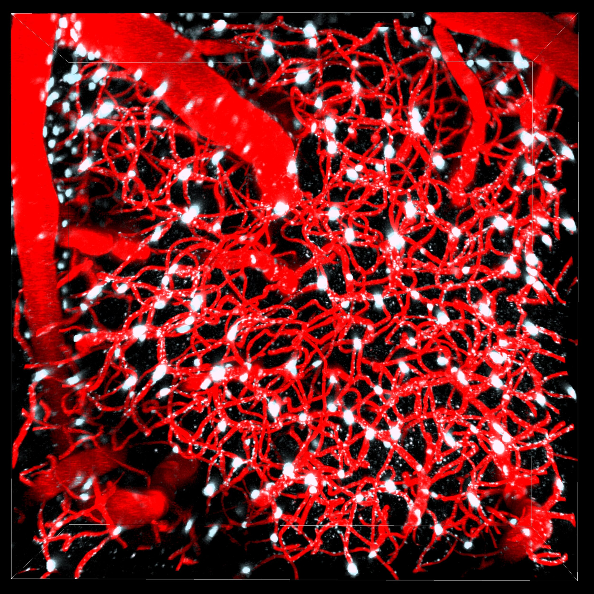
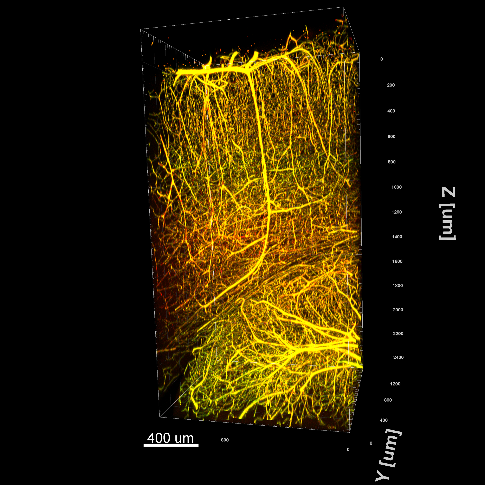
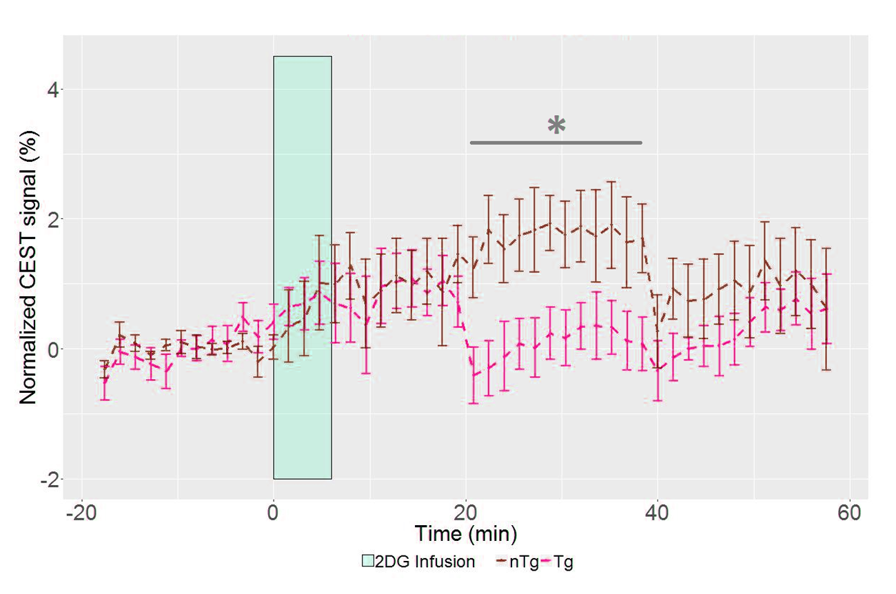
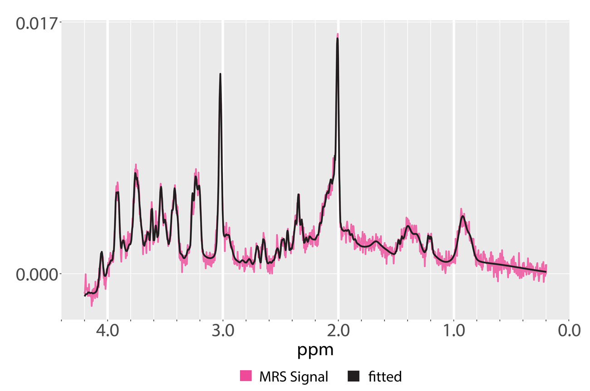
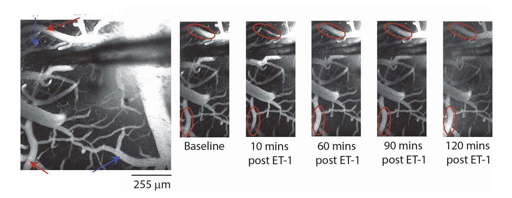
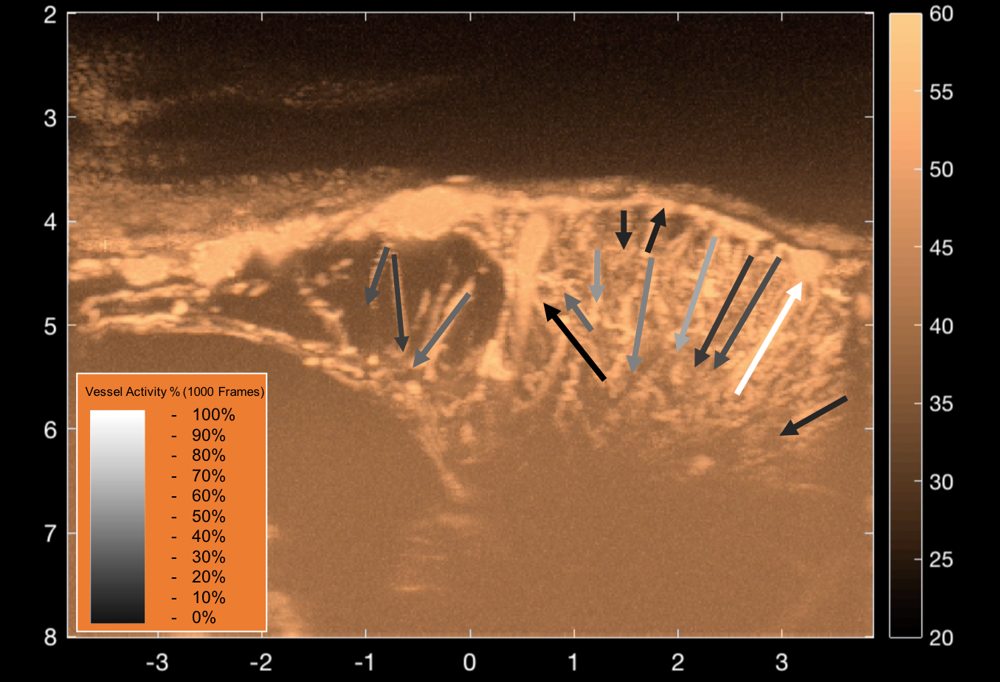

Our Research Projects
Investigating cellular mechanics and macroscopic signals in Alzheimer's, stroke, and concussions.
Examining the Consequences of Concussions
Traumatic Brain Injury (TBI) and concussions are pervasive in their negative effects on the brain throughout many demographics. It has been shown that even minor injuries to the brain (mild TBI), either singular or repeated, can cause far-reaching neurological deficits in patients. However, the biological mechanisms leading to neurophysiological and morphological changes are not well understood.
In this project, we are characterizing the functional deficits seen in the brain following repeated mild TBI. Using a closed-head injury model, we have described the effects of this injury in the cortex in mice using BOLD and ASL fMRI to characterize compromised cerebrovascular function alongside electrophysiological recordings of cortical neurons. Recently, our lab has examined these effects at a finer scale using two-photon fluorescence microscopy, in which we utilized optogenetic techniques to obtain vascular and neuronal responses of excitation volumes on the order of single vessels. Our goal with this work is to assess the mechanism mild injuries have on the brain.


Metabolic Profiling of Alzheimer's Disease
The brain’s demand for energy is disproportionately large for its size, accentuating the importance of robust microvascular function to compensate for the dynamic range of energy demands the neuronal network has for normal brain function. In fact, various forms of neurodegeneration that exhibit progressive decline in brain function can be associated with alterations in microvascular function and metabolism.
At the Functional Brain Imaging Lab (fBIL), we utilize a rat model of Alzheimer’s disease (the TgF344-AD rat: TgAD) to further our understanding of how different aspects of brain function and underlying mechanisms are altered. Emerging evidence in both AD patients and animal models shows alterations in metabolic pathways in the presymptomatic stage of AD. Characterizing changes in metabolic pathways prior to manifestation of cognitive deficits in our rat model serves the purpose of identifying early biomarkers of AD and completing our understanding of AD pathology before the onset of clinical symptoms.
Our goal is to establish metabolic alterations in the hippocampus and entorhinal cortex of TgAD rats during their presymptomatic disease stage. Here, brain metabolism is assessed by glucose uptake and ketone metabolism using MRI Chemical Exchange Saturation Transfer (CEST) and MR spectroscopy, respectively. Additionally, the imaging protocol devised for this study enables repeated scans at higher spatial and temporal resolution.


The Neurovascular Unit in Stroke Recovery
Most stroke survivors suffer moderate to severe long-term functional deficits despite the treatment availability of tissue plasminogen activator and endovascular thrombectomy. Potentiating the beneficial effects of rehabilitation therapy in the chronic stage of stroke thus remains a major clinical challenge. We study the acute neurovascular sequelae following focal cortical ischemia to design better tools to promote long term recovery.
To this end, we use multi-scale and multi-modal imaging (MRI, fUS, 2PLSM and PET) and electrophysiology (laminar and multi electrode arrays) to study the long term benefits of treatments on neurovascular recovery following stroke. By imaging neuronal and vascular collapse in real time before, during, and after ischemia, we can examine the efficacy of different therapeutic approaches on neurovascular coupling and use Machine Learning to build models that predict the trajectory of the recovery.

